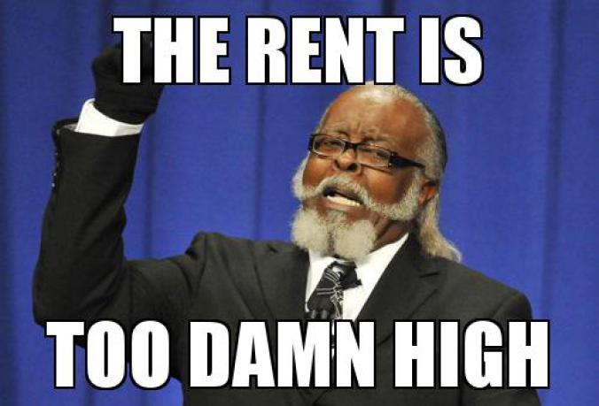

Anyone else remember this guy?
Housing in Cambridge
Ask any candidate for city council about their priorities for the city and you’re likely to hear something about affordable housing and development. A perennial subject of debate in Cambridge politics, housing encompasses many complicating factors: students, a booming tech and biotech economy, sustainability, and the space limitations of any urban environment, just to name a few.
When the ground is broken for a new construction project, is that a positive sign of growth? A herald of gentrification and displacement? A promise of lower rents? A sign of more tourists?
Another hot-button topic around this issue has been campaign funding from local real estate agents and property developers. Some people worry that taking this funding will influence candidates' priorities when writing city policy.
By the numbers
- Approx. 110,400 residents and 52,800 residential units.
- 65.4% of units are rented and 34.6% are owner occupied.
- 10th densest city in the USA.
- $3,145/month: median monthly rent citywide in 2015.
- $1,150,000: median 1-3 family home sale price citywide in 2015.
- $612,000: median condo sale price citywide in 2015.
The people:
- The median family income totaled $104,454, but 14.0% of all persons and 9.0% of all families had incomes below the poverty line. (CDD, 2011 - 2015 American Community Survey)
- More than 30% of Cambridge residents attend school full- or part-time, with more than 6,000 students living in off-campus housing.
- The Cambridge Community Development Department administers affordable housing programs for renters and buyers, but wait times are unpredictable and can be long.
See also: Cambridge Housing Profile 2016
Recent Policies, Enacted and Proposed
- In April 2017, the Cambridge city council voted unanimously to increase the required amount of affordable units in new development from 15% to 20%. (Community Development Department News)
- In August 2017, the council unanimously voted to restrict short-term rentals (such as AirBnB) to owner-occupied residences of less than 5 units. (Globe, masslive, Scout Cambridge, Wicked Local, and Ordinance passed)
- Graduate students at MIT filed a petition in August 2017 to require the university to build more student housing before developing commercial space in Kendall Square. (Globe)
- Affordable housing policy could be further changed to including more middle-income programs and larger units for families.
- A transfer tax would penalize real estate speculators who buy property without living in it.
What do you think?
- Do agree with the MIT students asking for more grad student housing as part of the Volpe site development? (Globe)
- Is 20% the right proportion of affordable units in new housing?
- How can Cambridge balance the needs of economic growth and affordable housing?